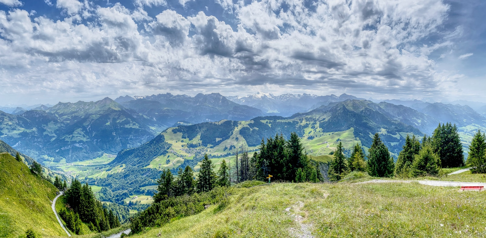
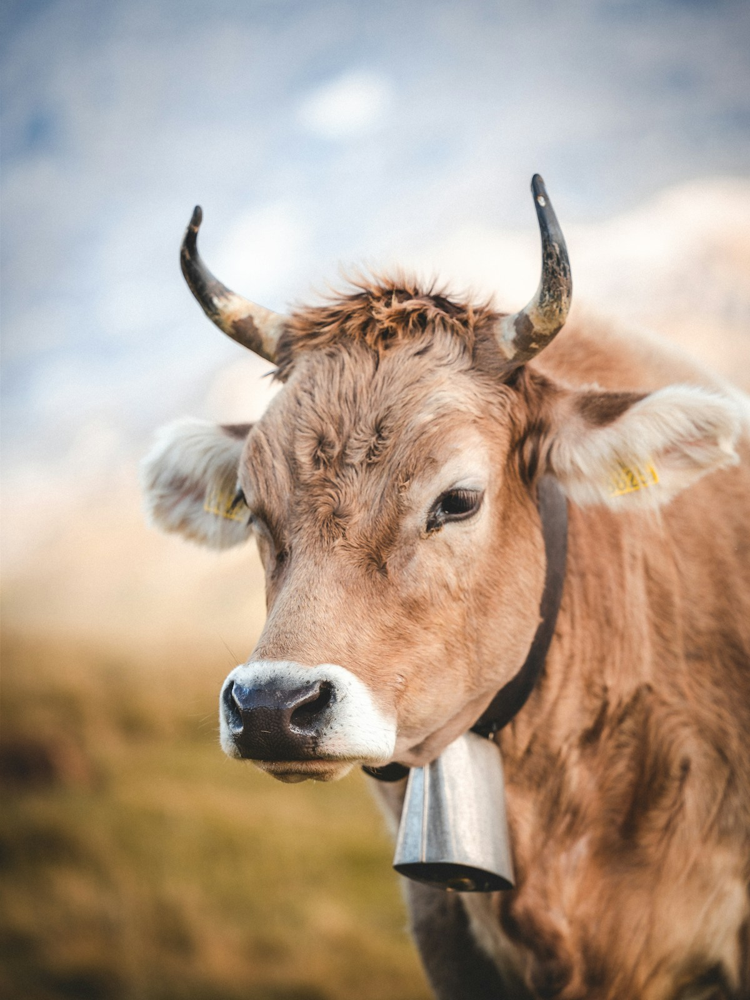

Introduction to Switzerland
Why Visit Switzerland
Switzerland is one of the most beautiful countries in the world, offering a perfect blend of natural beauty, cultural richness, and modern infrastructure. For Indian travelers, Switzerland represents a dream destination with its snow-capped Alps, pristine lakes, charming villages, and world-class trains. Whether you are a nature lover, adventure seeker, or someone looking for a romantic getaway, Switzerland has something for everyone.
The country is renowned for its safety, cleanliness, punctuality, and efficient public transport system. Indian tourists will find Switzerland welcoming and accessible, with many attractions offering multilingual guides and Indian food options.

Geography
Switzerland is a landlocked country in Central Europe, bordered by Germany to the north, France to the west, Italy to the south, and Austria and Liechtenstein to the east. The country is divided into three main geographical regions: the Swiss Alps in the south, the Swiss Plateau (Mittelland) in the center, and the Jura Mountains in the north.
The Alps cover about 60% of Switzerland's total area and include famous peaks like the Matterhorn (4,478 m), Jungfrau (4,158 m), and Eiger (3,970 m). The country has numerous lakes including Lake Geneva, Lake Zurich, and Lake Lucerne, which add to its scenic beauty.
Climate
Switzerland has a temperate climate with distinct seasons. The climate varies significantly depending on altitude and region.
| Season | Months | Temperature (Lowlands) | Temperature (Mountains) |
|---|---|---|---|
| Spring | March - May | 8°C - 18°C | 0°C - 10°C |
| Summer | June - August | 18°C - 28°C | 5°C - 15°C |
| Autumn | September - November | 8°C - 18°C | 0°C - 10°C |
| Winter | December - February | -2°C - 7°C | -10°C - 0°C |
Languages
Switzerland has four official languages: German (spoken by about 63% of the population), French (23%), Italian (8%), and Romansh (0.5%). English is widely spoken in tourist areas, hotels, restaurants, and public transport. Most Swiss people working in tourism speak excellent English, so Indian travelers will have no trouble communicating.
Currency
The official currency is the Swiss Franc (CHF). While Switzerland is part of the Schengen Area, it does not use the Euro. Credit and debit cards are widely accepted everywhere. It is advisable to carry some cash for small purchases and in remote areas.
1 CHF ≈ ₹95 (INR) — Exchange rates may vary. Always check current rates before traveling.
Swiss Culture
Swiss culture is a rich tapestry of German, French, and Italian influences. The Swiss are known for their punctuality, efficiency, and respect for privacy. Key cultural highlights include chocolate-making, cheese production (fondue and raclette), watchmaking, and traditional festivals like the Zurich Sechselauten and Montreux Jazz Festival.

Safety
Switzerland is one of the safest countries in the world for tourists. Crime rates are very low, and violent crime is rare. However, like any popular tourist destination, pickpocketing can occur in crowded areas, especially in train stations and tourist hotspots.
Travel Etiquette
- Always greet with a handshake and maintain eye contact.
- Be punctual for all appointments and reservations.
- Tipping is not mandatory but rounding up the bill is appreciated.
- Keep noise levels low, especially on public transport.
- Always ask before taking photos of locals.
- Respect queuing discipline.